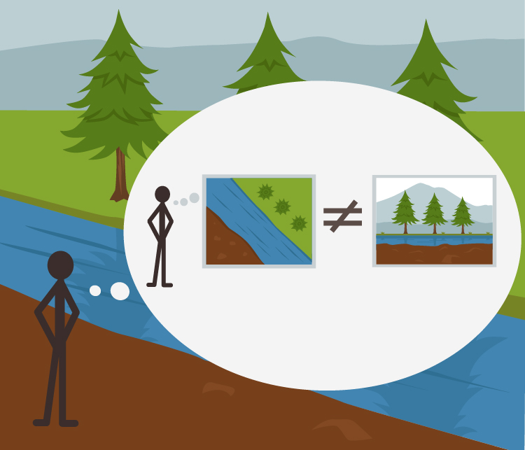

Eliezer Yudkowsky, 06 October 2012 09:59AM
Followup to: The Useful Idea of Truth [http://lesswrong.com/lw/eqn/the_useful_idea_of_truth/] (minor post)
So far as I know, the first piece of rationalist fiction - one of only two explicitly rationalist fictions I know of that didn't descend from HPMOR, the other being "David's Sling" by Marc Stiegler - is the Null-A series by A. E. van Vogt. In Vogt's story, the protagonist, Gilbert Gosseyn, has mostly non-duplicable abilities that you can't pick up and use even if they're supposedly mental - e.g. the ability to use all of his muscular strength in emergencies, thanks to his alleged training. The main explicit-rationalist skill someone could actually pick up from Gosseyn's adventure is embodied in his slogan:
"The map is not the territory."

Sometimes it still amazes me to contemplate that this proverb was invented at some point, and some fellow named Korzybski invented it, and this happened as late as the 20th century. I read Vogt's story and absorbed that lesson when I was rather young, so to me this phrase sounds like a sheer background axiom of existence.
But as the Bayesian Conspiracy enters into its second stage of development, we must all accustom ourselves to translating mere insights into applied techniques. So:
Meditation: [http://wiki.lesswrong.com/wiki/Koan] Under what circumstances is it helpful to consciously think of the distinction between the map and the territory - to visualize your thought bubble containing a belief, and a reality outside it, rather than just using your map to think about reality directly? How exactly does it help, on what sort of problem?
...
...
...
Skill 1: The conceivability of being wrong.
In the story, Gilbert Gosseyn is most liable to be reminded of this proverb when some belief is uncertain; "Your belief in that does not make it so." It might sound basic, but this is where some of the earliest rationalist training starts - making the jump from living in a world where the sky just is blue, the grass just is green, and people from the Other Political Party just are possessed by demonic spirits of pure evil, to a world where it's possible that reality is going to be different from these beliefs and come back and surprise you. You might assign low probability to that in the grass-is-green case, but in a world where there's a territory separate from the map it is at least conceivable that reality turns out to disagree with you. There are people who could stand to rehearse this, maybe by visualizing themselves with a thought bubble, first in a world like X, then in a world like not-X, in cases where they are tempted to entirely neglect the possibility that they might be wrong. "He hates me!" and other beliefs about other people's motives seems to be a domain in which "I believe that he hates me" or "I hypothesize that he hates me" might work a lot better.
Probabilistic reasoning is also a remedy for similar reasons: Implicit in a 75% probability of X is a 25% probability of not-X, so you're hopefully automatically considering more than one world. Assigning a probability also inherently reminds you that you're occupying an epistemic state, since only beliefs can be probabilistic, while reality itself is either one way or another.
Skill 2: Perspective-taking on beliefs.
What we really believe feels like the way the world is; from the inside, other people feel like they are inhabiting different worlds from you. They aren't disagreeing with you because they're obstinate, they're disagreeing because the world feels different to them - even if the two of you are in fact embedded in the same reality.
This is one of the secret writing rules behind Harry Potter and the Methods of Rationality. When I write a character, e.g. Draco Malfoy, I don't just extrapolate their mind, I extrapolate the surrounding subjective world they live in, which has that character at the center; all other things seem important, or are considered at all, in relation to how important they are to that character. Most other books are never told from more than one character's viewpoint, but if they are, it's strange how often the other characters seem to be living inside the protagonist's universe and to think mostly about things that are important to the main protagonist. In HPMOR, when you enter Draco Malfoy's viewpoint, you are plunged into Draco Malfoy's subjective universe, in which Death Eaters have reasons for everything they do and Dumbledore is an exogenous reasonless evil. Since I'm not trying to show off postmodernism, everyone is still recognizably living in the same underlying reality, and the justifications of the Death Eaters only sound reasonable to Draco, rather than having been optimized to persuade the reader. It's not like the characters literally have their own universes, nor is morality handed out in equal portions to all parties regardless of what they do. But different elements of reality have different meanings and different importances to different characters.
Joshua Greene has observed - I think this is in his Terrible, Horrible, No Good, Very Bad paper [http://www.wjh.harvard.edu/~jgreene/GreeneWJH/Greene-Dissertation.pdf] - that most political discourse rarely gets beyond the point of lecturing naughty children who are just refusing to acknowledge the evident truth. As a special case, one may also appreciate internally that being wrong feels just like being right, unless you can actually perform some sort of experimental check.
Skill 3: You are less bamboozleable by anti-epistemology or motivated neutrality which explicitly claims that there's no truth.
This is a negative skill - avoiding one more wrong way to do it - and mostly about quoted arguments rather than positive reasoning you'd want to conduct yourself. Hence the sort of thing we want to put less emphasis on in training. Nonetheless, it's easier not to fall for somebody's line about the absence of objective truth, if you've previously spent a bit of time visualizing Sally and Anne with different beliefs, and separately, a marble for those beliefs to be compared-to. Sally and Anne have different beliefs, but there's only one way-things-are, the actual state of the marble, to which the beliefs can be compared; so no, they don't have 'different truths'. A real belief (as opposed to a belief-in-belief) will feel true, yes, so the two have different feelings-of-truth, but the feeling-of-truth is not the territory.
To rehearse this, I suppose, you'd try to notice this kind of anti-epistemology when you ran across it, and maybe respond internally by actually visualizing two figures with thought bubbles and their single environment. Though I don't think most people who understood the core insight would require any further persuasion or rehearsal to avoid contamination by the fallacy.
Skill 4: World-first reasoning about decisions a.k.a. the Tarski Method aka Litany of Tarski.
Suppose you're considering whether to wash your white athletic socks with a dark load of laundry, and you're worried the colors might bleed into the socks, but on the other hand you really don't want to have to do another load just for the white socks. You might find your brain selectively rationalizing reasons why it's not all that likely for the colors to bleed - there's no really new dark clothes in there, say - trying to persuade itself that the socks won't be ruined. At which point it may help to say:
"If my socks will stain, I want to believe my socks will stain;
If my socks won't stain, I don't want to believe my socks will stain;
Let me not become attached to beliefs I may not want."
To stop your brain trying to persuade itself, visualize that you are either already in the world where your socks will end up discolored, or already in the world where your socks will be fine, and in either case it is better for you to believe you're in the world you're actually in. Related mantras include "That which can be destroyed by the truth should be" and "Reality is that which, when we stop believing in it, doesn't go away". Appreciating that belief is not reality can help us to appreciate the primacy of reality, and either stop arguing with it and accept it, or actually become curious about it.
Anna Salamon and I usually apply the Tarski Method by visualizing a world that is not-how-we'd-like or not-how-we-previously-believed, and ourselves as believing the contrary, and the disaster that would then follow. For example, let's say that you've been driving for a while, haven't reached your hotel, and are starting to wonder if you took a wrong turn... in which case you'd have to go back and drive another 40 miles in the opposite direction, which is an unpleasant thing to think about, so your brain tries to persuade itself that it's not lost. Anna and I use the form of the skill where we visualize the world where we are lost and keep driving.
Note that in principle, this is only one quadrant of a 2 x 2 matrix:
| In reality, you're heading in the right direction | In reality, you're totally lost | |
| You believe you're heading in the right direction | No need to change anything - just keep doing what you're doing, and you'll get to the conference hotel | Just keep doing what you're doing, and you'll eventually drive your rental car directly into the sea |
| You believe you're lost | Alas! You spend 5 whole minutes of your life pulling over and asking for directions you didn't need | After spending 5 minutes getting directions, you've got to turn around and drive 40 minutes the other way. |
Michael "Valentine" Smith says that he practiced this skill by actually visualizing all four quadrants in turn, and that with a bit of practice he could do it very quickly, and that he thinks visualizing all four quadrants helped.
(Mainstream status [http://lesswrong.com/lw/erp/skill_the_map_is_not_the_territory/#7k96] here.)
Part of the sequence Highly Advanced Epistemology 101 for Beginners [http://wiki.lesswrong.com/wiki/Highly_Advanced_Epistemology_101_for_Beginners]
Next post: "Rationality: Appreciating Cognitive Algorithms [http://lesswrong.com/lw/eta/rationality_appreciating_cognitive_algorithms/]"
Previous post: "The Useful Idea of Truth [http://lesswrong.com/lw/eqn/the_useful_idea_of_truth/]"
| Sequence 17: Highly Advanced Epistemology 101 for Beginners: | |
|---|---|
Referenced by: The Useful Idea of Truth • Rationality: Appreciating Cognitive Algorithms
Original with comments: Skill: The Map is Not the Territory